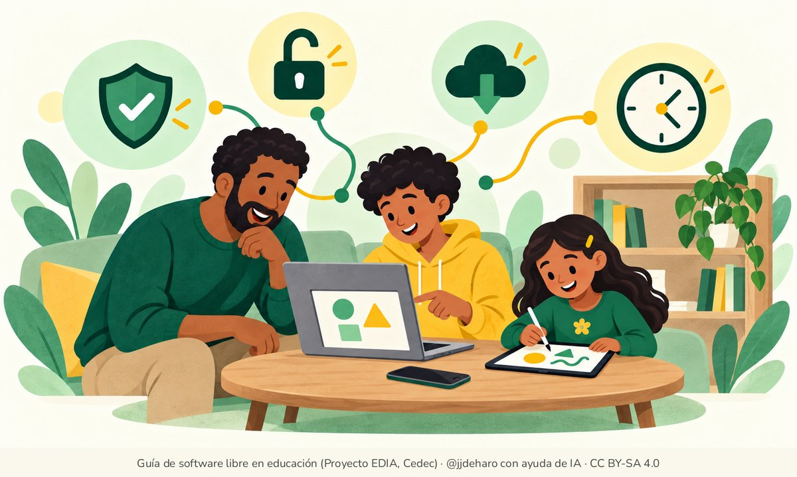

La tecnología en familia
En los hogares es habitual la convivencia de diferentes aparatos tecnológicos pertenecientes a sus diferentes miembros. Ordenadores de sobremesa, portátiles, tabletas y teléfonos inteligentes comparten vivienda y cargadores.


En esta sección se ofrece una visión general de los programas libres y los aparatos tecnológicos para toda la familia, que el profesorado puede trasladar a las familias de su alumnado. «Recomendaciones para el hogar» orienta sobre qué equipo comprar y qué sistema instalar en el ordenador de casa, y «Reunión informativa para familias» propone una sesión para explicarlo en el centro. Para los ordenadores que ya hay en casa sirve también «Dar una segunda vida a los ordenadores» y, para proteger las cuentas de toda la familia, «Contraseñas y copias de seguridad».